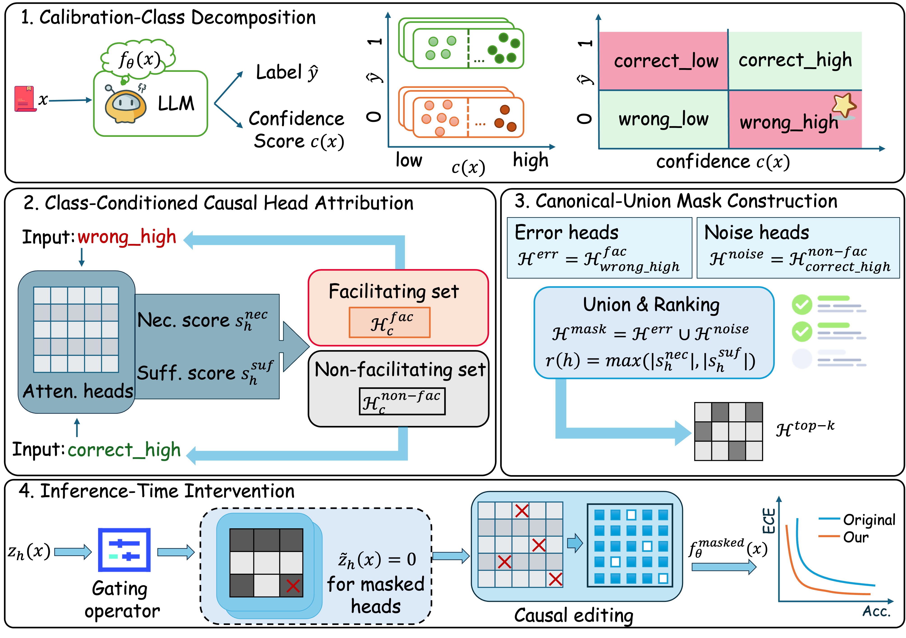

Separate behaviors
Partition predictions by correctness and confidence to isolate overconfident errors.
correctness × confidenceMECHANISTIC INTERPRETABILITY · 2026
Better confidence starts inside the model.
Correcting overconfident errors through Class-oriented Causal Head Intervention. Find the heads that drive unreliable confidence. Intervene precisely.
RMIT University † Equal contribution * Corresponding author
Trace the mechanisms behind model confidence.
01 / THE IDEA
A model can be certain and still be wrong. CoCHI asks which internal components make that happen.
Most calibration methods adjust output probabilities. CoCHI instead examines the model’s attention heads, linking their causal roles to distinct patterns of correctness and confidence.
Using a small calibration set, it identifies heads that facilitate overconfident errors and components that do not support confident, correct predictions. A compact, protected mask suppresses selected heads during inference while keeping the pretrained model parameters frozen.
Protect the heads that support reliable answers.
Right answer. Uncertain confidence.
Find the mechanisms behind confident errors.
Wrong answer. Uncertainty acknowledged.
Classes are defined on labeled calibration data, not by access to test-time correctness.
02 / UNDER THE HOOD
From behavioral patterns to a compact structural mask. Four steps, one frozen model.
Partition predictions by correctness and confidence to isolate overconfident errors.
correctness × confidenceOptimize head gates on each class to identify facilitating and non-facilitating heads.
necessary + sufficientCombine error and noise heads, protect correct-high facilitators, then rank and select top-k.
Hmask = Herr ∪ HnoiseSuppress the selected head outputs. Preserve the remaining computation and model weights.
z̃h(x) = gh · zh(x)
Keep what makes the model right.
Heads that facilitate correct-high predictions are protected from masking, with an additional ranking penalty to preserve useful computation.
03 / THE EVIDENCE
Explore reported results across general knowledge, science, and medical QA.
| Method | Accuracy ↑ | ECE ↓ | NLL ↓ | Brier Score ↓ |
|---|
Results shown as mean ± standard deviation. Best means in each metric are highlighted. ECE, NLL, and Brier Score: lower is better. Accuracy: higher is better.
Class-conditioned causal selection targets specific sources of unreliable confidence.
CoCHI selects 10 heads for LLaMA and 8 for Gemma and Mistral, using a small calibration set.
Evaluated on multiple-choice QA. Open-ended generation and multi-turn interactions remain future work.